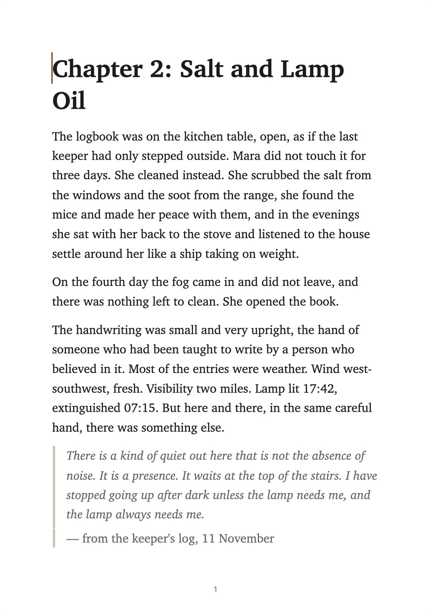
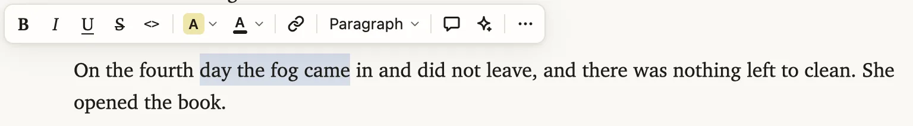
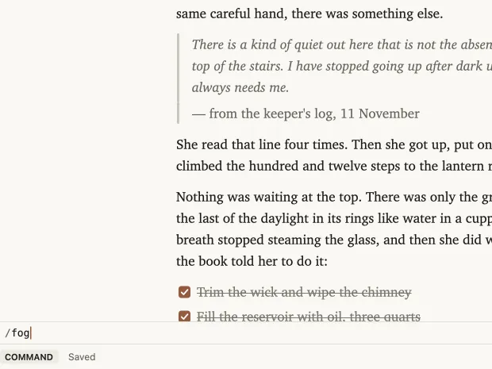
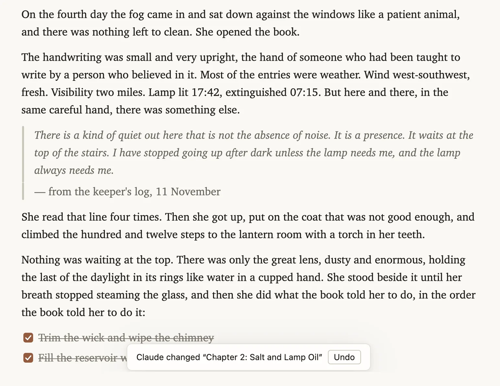
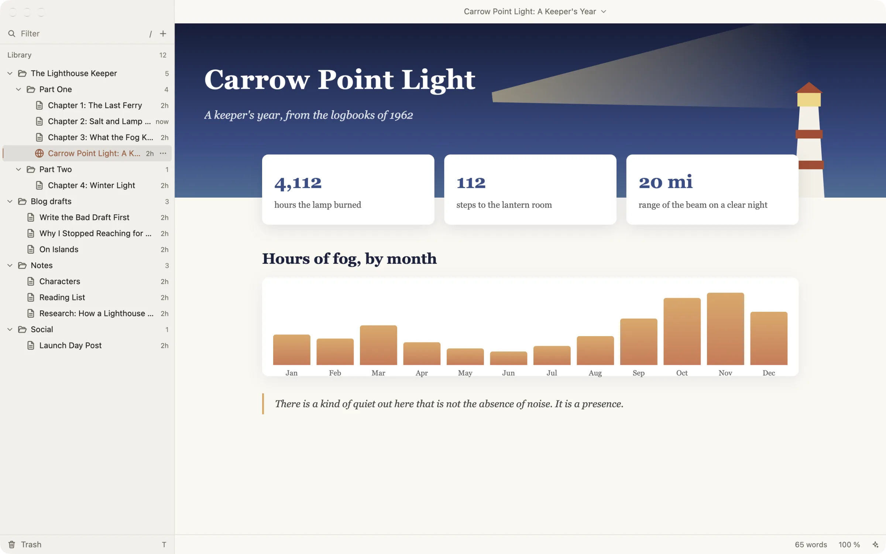

A writing app for macOS · Version
Paper, ink, and your keyboard.
Inner Word is a rich-text writing app for books, blog posts and social posts. Everything can be done from the keyboard, everything can be done with the mouse, and your library stays on your Mac.
For Apple silicon and Intel Macs · macOS 11 or later (10.15.7 on Intel)

What Inner Word is
Inner Word is for people who write long things. You get a single column of text in a serif made for reading, or real sheets of paper in page view, and very little else on screen. There is no ribbon and no toolbar. Formatting comes from shortcuts, Markdown-style typing, a small format bar over a mouse selection and right-click menus.
Your documents live in a library of folders on your own Mac, saved as you type, with versions you can go back to. It is written in Rust on GPUI, with a GPU-drawn interface.
A writing surface that gets out of the way
Write in a calm column, or switch to page view Option Command P and see your text on real paper: its size, margins and page numbers, laid out the way it will print.
- A4, Letter or a custom size, portrait or landscape, with your own margins.
- Charter by default; font, size, line and paragraph spacing per document.
- Zoom from 50 % to 400 %, fit the width, fit a page, or life size. The same words stand on the same pages at every zoom.
- Two themes: Paper and Night.

Keyboard first. Mouse welcome.
Every feature can be reached and finished from the keyboard. Every feature can also be reached with the mouse alone: right-click anything, or use the native menu bar, which has every command.
- The command palette Shift Command P runs any command by name; quick open Command P jumps to any document.
- Every shortcut can be changed. The list Command Slash says when a key is taken or kept by macOS, and exports and imports your keys as a file.
- Vim mode Option Command V, with spelling keys like
]sandz=.






A library, not a pile of files
Folders and documents in a sidebar, all in one place, all searchable.
- Create, rename and move folders and documents from the keyboard or with the mouse.
- Search the whole library Shift Command F, or open a document by name Command P.
- Version history for every document: preview a version and bring it back.
- Deleted documents go to the trash first.
Your text is never lost
There is no save button because none is needed.
- Documents save as you type, and again when you switch, close or quit. Command S saves at once, for anyone who wants to be sure.
- A daily backup of the library is kept, seven days deep, with a second copy of your pictures.
- Two copies of the app never open the same library, so neither overwrites the other.

The tools of a manuscript, without the clutter
Comments for the edit, pictures in the text, your Mac’s own spelling, and export when it is ready.
- Comments. Select text, add a comment Option Command M, reply, resolve, and step through threads with Option Command right bracket and Option Command left bracket.
- Pictures. Insert, paste or drop them, resize with a corner or the keyboard, and describe each one. The GPS position is always taken out; camera and date details stay in the file.
- Spelling. Your Mac’s checker, the language found paragraph by paragraph or chosen per document.

Export and print
Export a document or a whole folder Shift Command S. A folder becomes one PDF, each document on its own paper, with page numbers running through. Print goes through the macOS print panel, exactly as page view shows it, at real size.
- Markdownwith a folder of its pictures
- WordDOCX, pictures inside
- PDFthe pages Print makes
- Plain textdescriptions for pictures
An assistant, if you want one
If Claude Code is installed on your Mac and you are signed in, Inner Word has a writing assistant that runs on it. If not, nothing of it is shown.
- Quick chat Command J: ask about the selected text in a small popover at the selection. Another word, a tighter sentence, another tone.
- Side chat Command 3: a longer conversation beside the text that knows the whole document, and other documents and folders you add.
- It advises, you apply. Every answer has buttons to replace the selection, insert it or copy it, and Command Z takes it back. It never changes a document by itself.
Nothing is sent until you send a message. Messages go to Anthropic through your own Claude Code sign-in and count against your own plan.

Built for the agents on your Mac
Claude Code, Codex, Gemini CLI and the others can read and edit your library through innerword, a command line tool and MCP server that ships inside the app.
- A version is kept before every change an agent makes to a document’s text. What an agent deletes goes to the trash.
- It works while the app is open: the change appears between two key presses, after your own typing is saved, with a note that names the agent and an Undo button.
- The Agents panel Option Command A installs the skill and shows the MCP command for each agent. Nothing is installed until you press a button.

innerword edit \
"The Lighthouse Keeper/Part One/Chapter 2: Salt and Lamp Oil" \
--old "the fog came in and did not leave" \
--new "the fog came in and sat down against the windows like a patient animal" \
--author Claude
Works with Claude Code · the Claude desktop app · Codex · Cursor · VS Code with GitHub Copilot · GitHub Copilot CLI · Gemini CLI · Antigravity · OpenCode · Devin Desktop · Zed · Pi
Web pages, kept offline for good
Keep a web page in your library beside your documents: an HTML file, a folder, or a Claude artifact you saved. Everything it needs is downloaded once, when you add it. Showing it never touches the network.
- A page that cannot be kept whole is not kept at all, and Inner Word names what is missing.
- Pages have a globe in the library, and turn up in search, quick open and the trash like any document.
- Find in a page, zoom it, print it, or export it as a folder that opens offline, or as a PDF.
- Pages need macOS 12.3 or later.

The keys you will use every day
These are the defaults. Every one of them can be changed.
- Shift Command P
- Command palette
- Command P
- Open a document by name
- Shift Command F
- Search the whole library
- Command N
- New document
- Command Period
- Format menu
- Slash
- Insert menu, at the start of a line
- Option Command P
- Page view on or off
- Command Plus Command Minus
- Zoom in, zoom out
- Option Command M
- Comment on the selection
- Shift Command S
- Export
- Command J
- Ask the assistant, when Claude Code is installed
- Command Slash
- Every shortcut, to look up and change
Context menus from the keyboard: Control Return or Shift F10.
Your writing stays on your Mac
No account. No sign-up. Your library is a folder on your Mac.
~/Library/
Documents are in library.db, pictures in images.db, both SQLite. Removing the app does not remove your documents. Back up that folder and you have a copy of everything.
- The assistant is optional: nothing is sent before you send a message, and then only through your own Claude Code sign-in.
- Saved web pages never touch the network once they are kept.
- The GPS position is taken out of every picture you add. Camera and date details stay in the file.
- Agents work with your library through the
innerwordtool that ships in the app, and a version is kept before they change a document’s text.
Download Inner Word
For macOS. Two disk images; choose Universal if you are not sure.
macOS 10.15.7 or later on an Intel Mac, macOS 11 or later on Apple silicon. Pages (saved web pages) need macOS 12.3. · All releases on GitHub
Install
- Open the disk image and drag Inner Word onto the Applications folder.
- Eject the disk image.
- Open Inner Word. The first time, macOS stops it: see the note.
Open source, on GitHub
Inner Word is written in Rust, on GPUI, the UI framework made by the Zed team, with SQLite for the library. Read the code, build it yourself, report a bug or send a change.
- Rustthe whole app and its tools
- GPUInative, GPU-drawn interface
- SQLiteyour library, two files
Questions
Is there an account or a subscription?
No. Inner Word has no account and no subscription. The optional assistant runs on your own Claude Code plan, which Anthropic charges for.
Is there a version for Windows or Linux?
No. Inner Word is a Mac app, for macOS 10.15.7 or later on Intel and macOS 11 or later on Apple silicon.
Does it sync through iCloud?
No. Your library is a folder on your Mac, and Inner Word has no sync of its own. Back that folder up the way you back up the rest of your Mac.
Do I need Claude to use it?
No. The assistant appears only if Claude Code is installed and signed in, and it can be switched off in the settings. Everything else works without it.
Where are my documents stored?
In ~/Library/Application Support/Inner Word on your Mac: library.db for your documents and images.db for the pictures in them. Removing the app leaves them where they are.
It used to be called The Writer?
Yes, until version 0.9.0. The first launch of Inner Word moves your library from the old folder to the new one and leaves a link under the old name. Quit The Writer before you open Inner Word for the first time, then move The Writer to the Trash. The Agents panel updates the skill your agents had from The Writer.
Why does macOS block it the first time?
The app is not notarised by Apple. Approve it once in System Settings > Privacy & Security, or run the one Terminal command in Download.